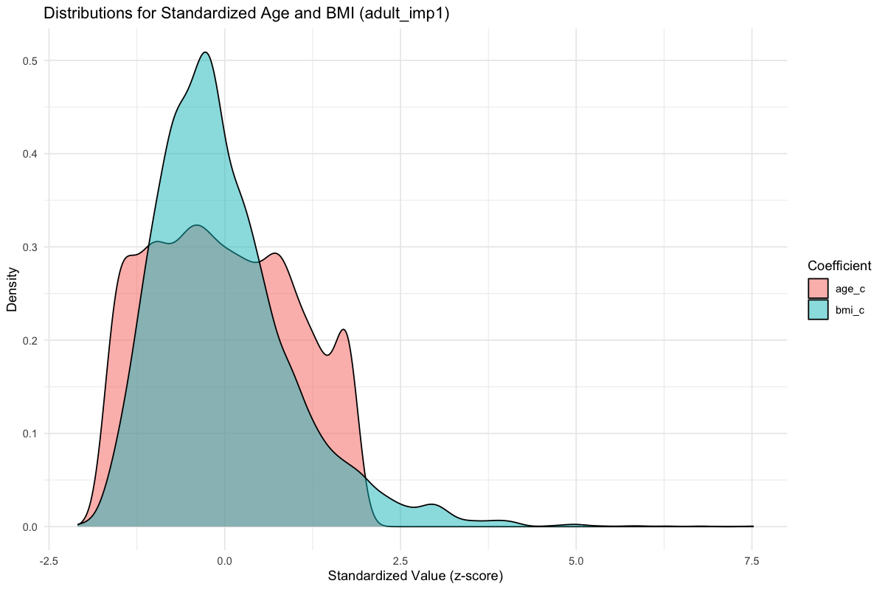
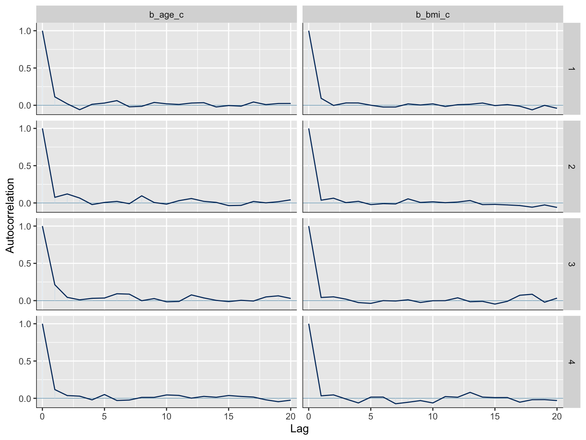

Bayesian Logistic Regression for Predicting Diabetes Risk
NHANES 2013–2014 Analysis
Namita Mishra & Autumn Wilcox
December 13, 2025
Missingness & Data Quality
- Missing mainly in BMI (~4.3%).
- Diabetes diagnosis variable (diabetes_dx) has ~3% missing, but those observations were excluded before MICE.
- Demographics and survey design variables fully observed.
- Pattern consistent with MAR; suitable for imputation.

EDA Figures


Define Model and Priors
diabetes_dx | weights(wt_norm) ~ age_c + bmi_c + sex + race
- Coefficients: Normal(0, 2.5)
- Intercept: Student t(3, 0, 10)

Imputed Dataset
Variables standardized as z-scores:
- age_c
- bmi_c


Fit the Bayesian Model
Model fit using
brm()with:- bernoulli(link = “logit”)
- priors defined previously
- 4 chains, 2000 iterations, adapt_delta = 0.95
All four MCMC chains converged (R-hat ≈ 1.00).
bayes_or created by exponentiating fixed effects:
- OR
- 95% credible intervals (LCL, UCL)

Posterior Odds Ratios (Bayesian Model)
Model Comparison: Survey-Weighted vs Bayesian
Odds ratios (95% intervals) compared across both modeling frameworks.

- Age and BMI show strong positive associations with diabetes.
- Female sex has lower odds relative to males.
- Non-White racial/ethnic groups have higher odds than White adults.
- All posteriors show unimodal, well-defined distributions with narrow credible intervals.
Bayesian Diagnostics & Model Fit

- R-hat ≈ 1.00 for all parameters → excellent convergence
- Bulk / Tail ESS > 2,000 → stable posterior sampling
- No divergences or mixing issues

- Chains overlap well
- No drift or instability
- Strong evidence of convergence

- Unimodal and well-centered
- Age & BMI → positive associations
- Female sex → protective effect

- Rapid decay across all parameters
- Indicates efficient sampling and chain independence
Posterior Predictive Checks

- Observed (
y) and replicated (y_rep) outcome distributions align closely. - Indicates that the Bayesian model accurately reproduces the empirical binary outcome structure.
Posterior Predictive Checks (cont.)


- Posterior replicated datasets match the observed mean and variability.
- Strong evidence of good model calibration.
- The Bayesian model captures both central tendency and dispersion of diabetes outcomes.
Prior vs. Posterior

- Posterior shifts strongly for Age and BMI, showing they are highly informed by data.
- Posterior is narrower than the prior → increased certainty.
- Sex shows more overlap → weaker evidence compared to age/BMI.
- Model incorporates priors appropriately.
- Strong predictors show clear posterior learning.
- Weak predictors are regularized without distortion.
Model Fit and Calibration

- Compares observed diabetes outcomes to model-predicted probabilities.
- LOESS curve aligns closely with the diagonal → good model calibration.

- Posterior predictive mean matches survey-weighted NHANES prevalence.

- Bayesian posterior prevalence overlaps with survey-weighted estimate.
- Confirms strong agreement and no systematic bias.
Internal Validation: Individual-Level Predictions
Posterior Predictive Distribution for an Example Participant

- Shows uncertainty in an individual’s predicted diabetes probability.
- 95% credible interval (red dashed lines) highlights plausible risk range.
- Demonstrates how Bayesian models produce distributions—not point predictions.
Posterior Predictions and Inverse Inference
Inverse Prediction: BMI Needed for Target Diabetes Risk

- Uses the posterior model to determine what BMI corresponds to a target diabetes probability.
- Example target probability: 0.30.
- Posterior predictions show that age and race have a stronger influence on diabetes risk than BMI, although BMI still shows a positive association.
- The estimated BMI associated with a 30% predicted diabetes probability is approximately 18 kg/m².
Comparison Across Models
Odds Ratios: Survey-Weighted vs Bayesian